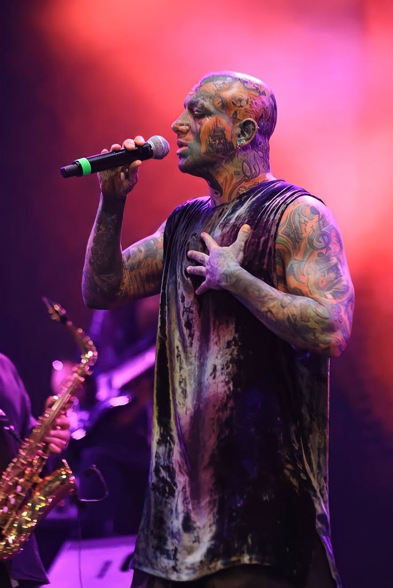

Introduction
My name is Daniel Oraki. I'm a student of Computer Engineering at Mohaghegh Ardabili university . I love learning new things which I'm interested in and be the best version of myself !
My Education
| Year |
School / University |
Degree |
| 2017 - 2023 |
High School |
Diploma |
| 2023 - Now |
Mohaghegh uni |
Bachelor in CE |

My Skills
- HTML & CSS
- Football
- Video Games
HTML & CSS :
I recently started learning HTML and CSS, and I found it really exciting. Building this personal website was a great experience, and I'm looking forward to diving deeper into web development with bigger projects soon.
Football :
Since childhood, football has been my biggest passion. I've always loved playing it, and I train with great dedication. I dream of achieving something big in football. Cristiano Ronaldo and Neymar are two of my all-time favorite players ; they inspire me deeply and are role models in both their skills and mindset.
Video Games :
I'm a huge fan of gaming. I play games like PUBG, FC25, Call of Duty, and more. Gaming is more than just fun for me ; it's something I'm seriously considering turning into a career by entering the world of streaming and game content creation to even earn from it.
My Biggest Inspiration

There is one person who has deeply influenced my life: Amir Tataloo. He is more than just an artist to me , he's an icon, a guide, and a source of strength. I've lived many moments of my life with his music and messages. Unfortunately, society often misunderstands him, and many people judge him without truly knowing who he is. But those of us who understand his art know the depth of his thoughts and emotions. His words resonate with my soul, and I consider him a legend.
Amir Tataloo isn't just an artist for me , he's a way of life. His music has been a constant companion through the toughest and happiest moments of my life. I've grown up with his voice in my ears and his lyrics in my heart. I've connected with his songs on a deeply personal level. His voice gives me courage, hope, and the feeling that I'm not alone , that someone out there truly gets what I feel inside. Tataloo isn't just my favorite artist , he's the symbol of who I want to be: fearless, passionate, and real. I'll always support him, and I'm proud to say that I live with his energy in my heart every day.
You can check out his amazing content on his official YouTube channel : Amir Tataloo YouTube